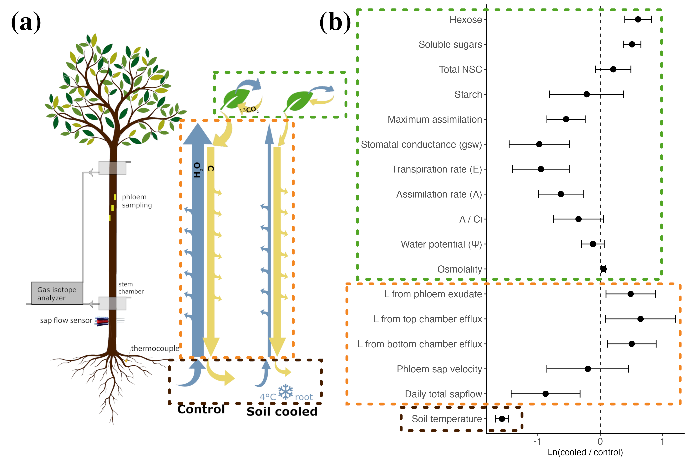
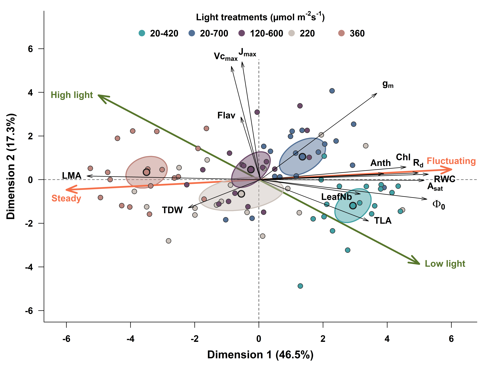
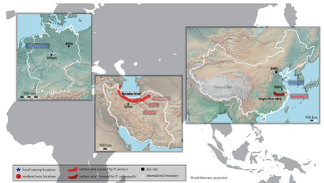
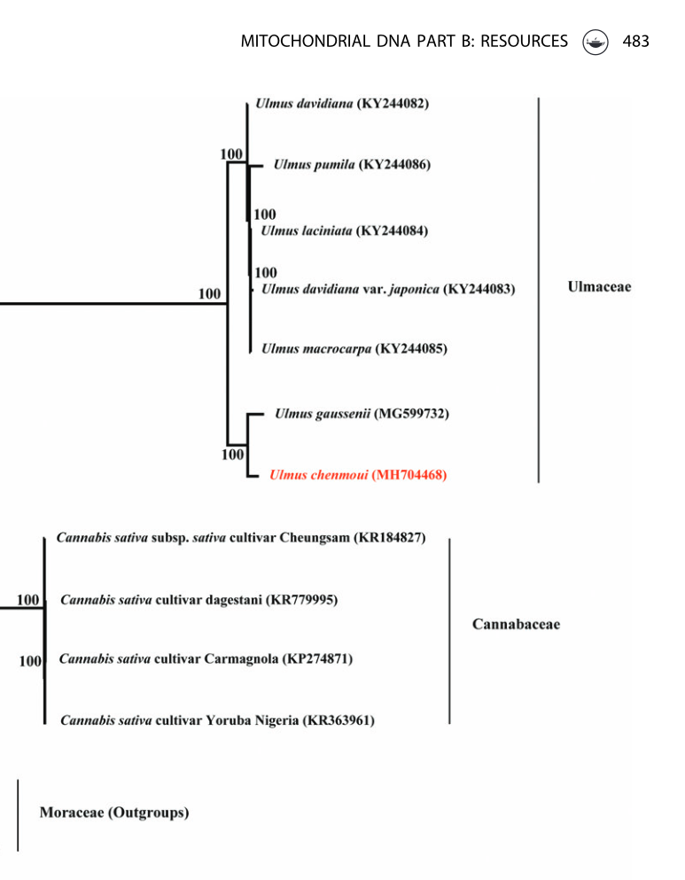
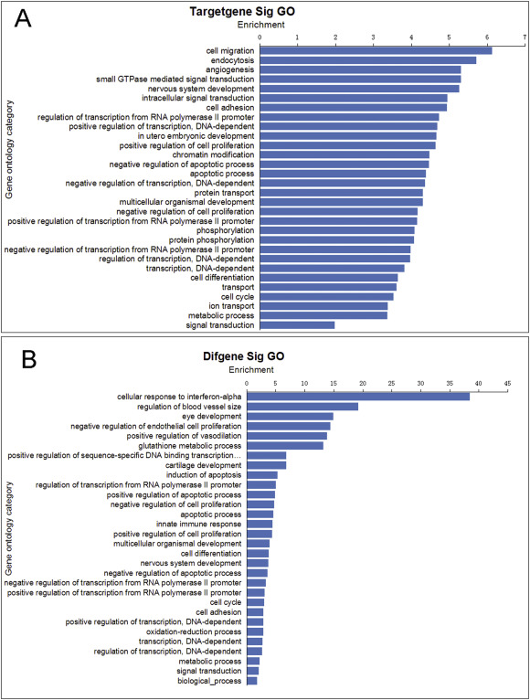

XIN ZHUANG
Selected Publications
‣ Carbon sink-source coordination in birch under root chilling: is phloem loading the main bottleneck? (submitted)

Core Insight: By combining stable isotope tracing and advanced statistical modeling, this study reveals how phloem loading acts as the primary bottleneck for carbon source-sink coordination under root-zone chilling stress.
🔗 Link: View Preprint
‣ Caught between two states: the compromise of photosynthesis, transpiration, and mesophyll conductance...

Core Insight: This study explores the physiological trade-offs and acclimation mechanisms among photosynthesis, transpiration, and mesophyll conductance under fluctuating irradiance of varying amplitudes.
🔗 DOI: 10.1111/pce.15107
‣ A case of long-term herbivory: specialized feeding trace on Parrotia (Hamamelidaceae) plant species (2020)

Core Insight: This research documents specialized feeding traces on Parrotia species, providing historical evidence for long-term plant-insect herbivory interactions and advancing our understanding of paleoecology.
🔗 DOI: 10.1098/rsos.201449
‣ Characterization of the complete chloroplast genome sequence of Ulmus chenmoui... (2019)

Core Insight: By mapping the complete chloroplast genome of the endangered endemic plant Ulmus chenmoui, this study provides crucial genetic resources for conservation biology and phylogenetic research.
‣ Expression analysis of microRNAs and mRNAs in ovarian granulosa cells after microcystin-LR exposure (2017)

Core Insight: This toxicological analysis reveals how microcystin-LR exposure alters the expression profiles of microRNAs and mRNAs, highlighting potential molecular mechanisms underlying reproductive toxicity.